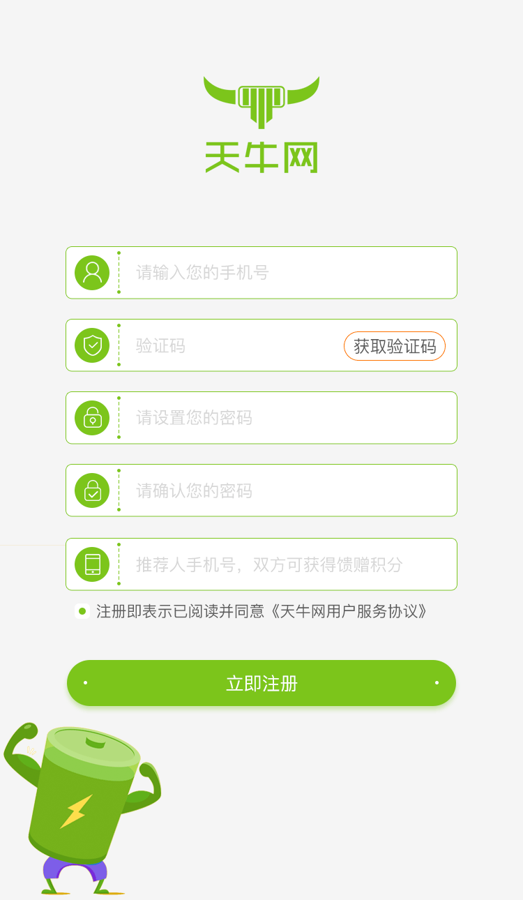
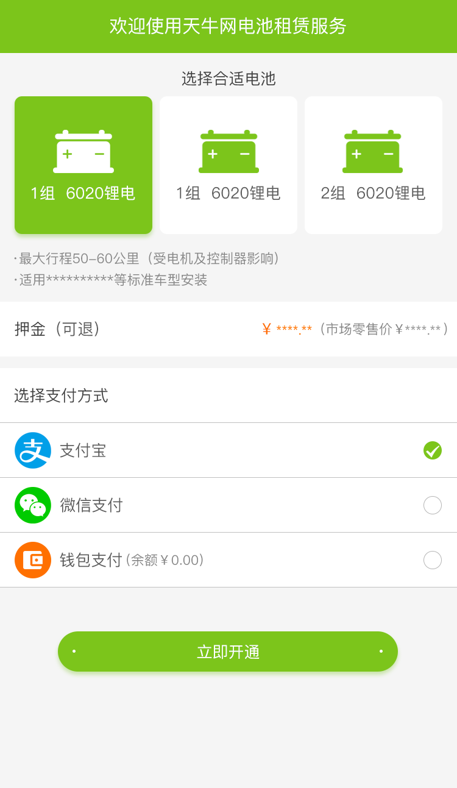
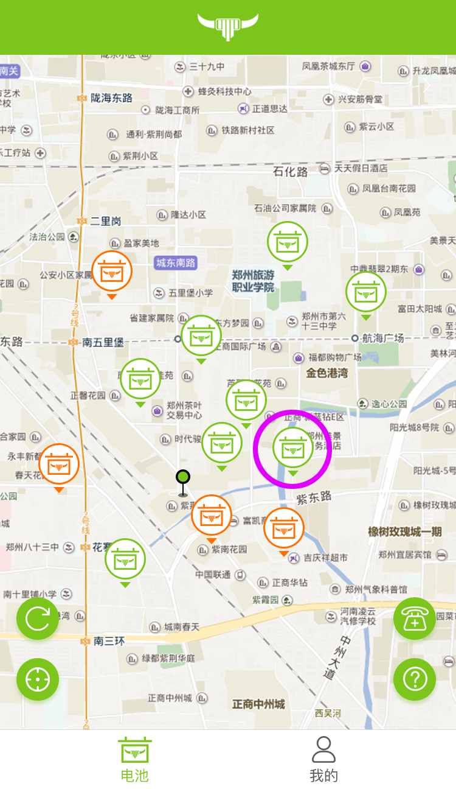
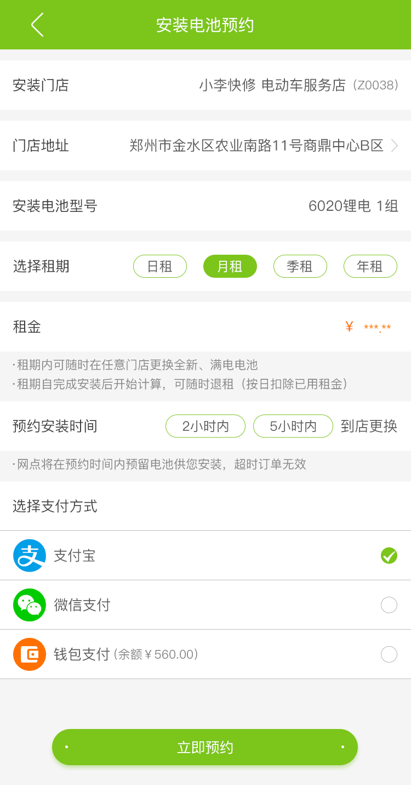
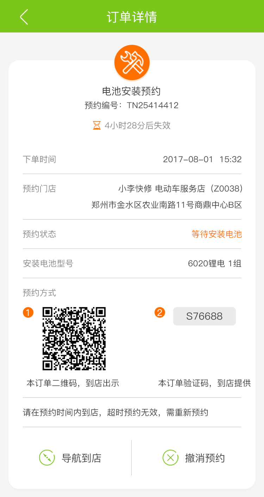
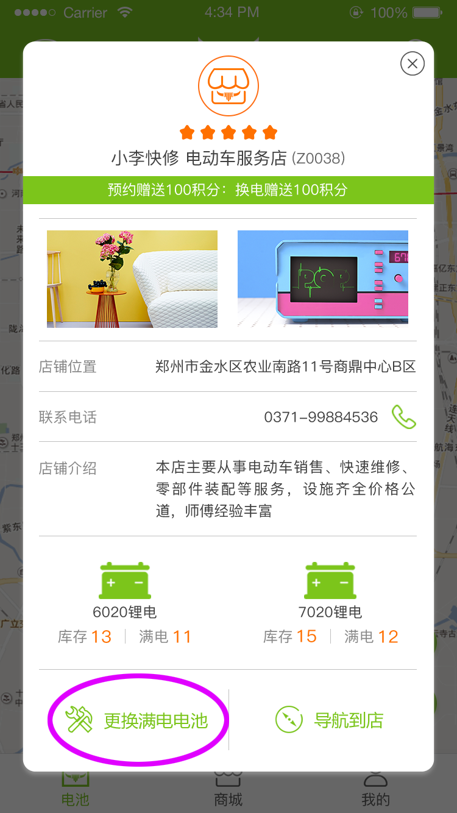
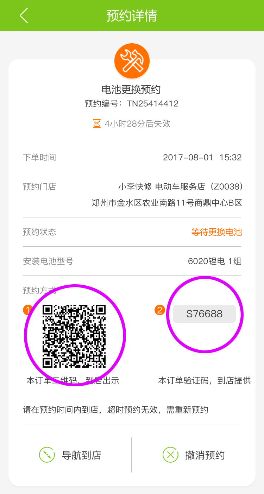
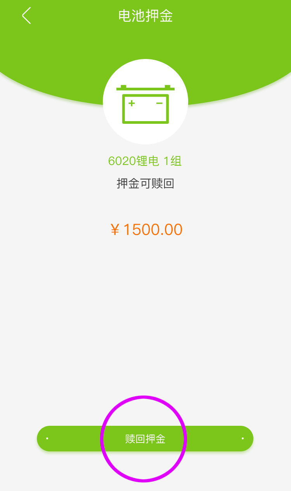
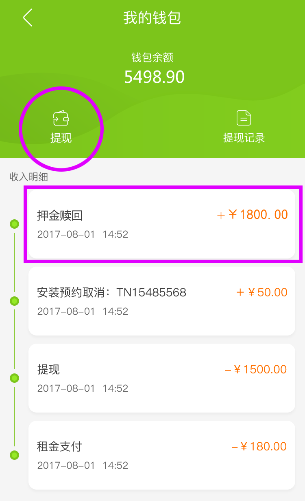

注意：请不要使用非天牛提供的充电器进行电池充电，造成的电池损坏将由您自行承担
• 如何使用天牛租电服务？
1. 下载天牛网APP，使用手机号完成账号注册。
2. 选择适用电池型号，交纳押金（支持支付宝、微信支付）。
3. 完成押金支付后，地图中点击就近店铺，预约到店安装电池。
步骤一：选择安装网点。
步骤二：选择租期、预约时间、完成支付。
选择预约租期、预约时间、支付方式等，完成预约。
预约时间内若不能到达网点，请提前撤消预约并重新预约。
若预约超时未完成安装则预约失效，已支付的租金等将返还至您的钱包，在重新预约时可直接支付使用。
步骤三：到店出示预约，完成安装。
到店点击地图上方的预约，向店主出示二维码或提供验证码；
店主扫码/输码完成预约验证，辅助完成电池安装；
• 租期中，如何进行满电电池更换？
1. 地图中选择网点，点击“更换满电电池”，提交预约并支付换电费，完成换电预约。
若网点电池暂没有充满，可更换其他网点，或稍后再查看；
换电费用可使用您的钱包余额、天牛币（平台活动可获取）等进行支付；
若预约超时未完成换电则预约失效，已支付的换电费将返还至您的钱包，在重新预约时可直接支付使用。
2. 到店出示预约二维码或验证码，完成满电电池更换。
• 如何完成退租及押金赎回
1. 在有效租期内，进入“我的”--“电池”页面，选择“我要退租”，提交退租预约。

退租预约需在有效租期内提交，若您当前是逾期状态，则无法完成退租，需先完成续租及滞纳金支付后，才可进行退租。
2. 到达预约门店，出示预约，店主完成电池检查及回收，完成退租。
3. 退租预约完成后，进入“我的”--“押金”页面，选择“赎回押金”。
4. 押金赎回后，押金将进入您的钱包，您可以选择再次租用时支付押金，也可以进行现金的提现。
• 逾期、提前退租与违约金
电池安装后，超出您的租期时，即为逾期状态，逾期状态将每天产生滞纳金12元/ 天，该滞纳金将在每天从您的押金余额中扣除。
逾期状态下，所有服务都不可使用，无法更换电池及预约退租，需先完成续租及缴纳滞纳金后，才可继续使用各服务。
租期即将逾期的三天内，地图页面中将出现到期提醒，请在该时间段内完成租期续租。
租期内可提前退租，若退租时租期已过80%，则不产生违约金，若未超过80%，则按照完整租期租金的30%产生违约金。建议您在租期最后几天进行退租操作。
• 型号不符与电池损坏
当您到店进行换电或退租时，若网点工作人员发现您的电池型号不符，则有权拒绝提供服务，此时请手动“撤消预约”，并查验电池型号是否存在问题后重新预约服务。
当您到店进行换电或退租时，若网点人员发现您租用的电池存在破损、故障等情况，将拍摄照片并向平台提交报损，若平台判定您的电池已经由于人工问题损坏，将直接扣除您的所交押金（损坏电池归用户所有），按照租用协议规定不再提供后续的电池服务。
此时，您可以选择重新缴纳押金租用电池。若对报损评判结果有问题请联系平台客服沟通解决。
更多使用问题请联系客服 400 862 5918。